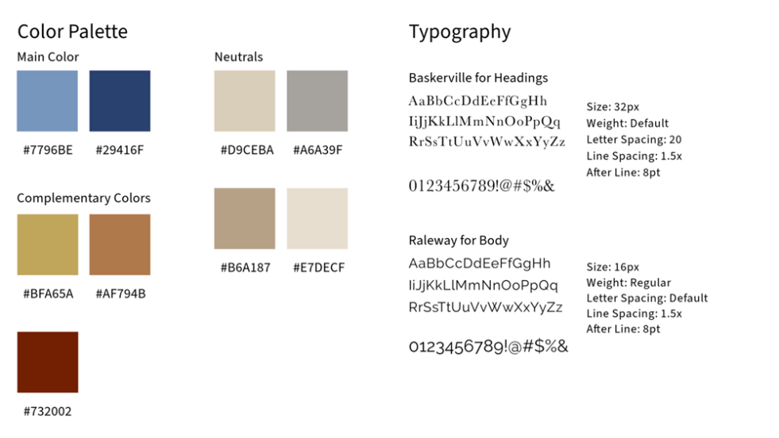

Project Overview
My Role
- UX Research
- UX Designer
- Visual Design
- Interaction Design
- Front-end Development
Technology
- Figma
- Canva
- Adobe Express
- Adobe Illustrator
- Adobe Photoshop
- Visual Studio Code
- Bootstrap5 & Sass
Timeline
- 3.5 months
Project Background
Final Project for WEB 2500: User Experience Design
Weber State University
Project Elements and Requirements:
- Responsive website
- HTML5 & CSS3 Development
Problem Statement
Many couples face the challenge of generic wedding photography services that don’t cater to their individual needs, resulting in a lack of personalization.
Design Process
Audience
My audience is any user that is either planning to get married, is going to get married, or knows someone that’s going to get married. The age range for my audience can range from 18 years old+. My audience doesn’t need to be a future bride, it can be anyone involved in the wedding planning process, i.e.wedding planners, parents, friends, family, etc.
User Flows
Possible User Flows:
- Creating a Bundle
- Submitting an Inquiry
- Browsing the Gallery
I began the design process by outlining 3 different user flow tasks where I planned the steps that users would take in order to complete certain tasks on the site. I created these flows in order to plan out how the site should be structured and make the site easy for users to navigate.
I then chose one of these user flows to create a diagram out of, allowing me to clearly see the route that I wanted users to take in order to complete the task.
User Flow Diagram
Taxonomy & Sitemap
Wireframes
I then began sketching my wireframes, making sure to include all of the elements that I planned out in both my website proposal and my user flows. I also included the elements of my taxonomy on my navbar as well as my footer and each page. These are the wireframes for my homepage.
I started out with sketching the mobile version first as to make it easier to create the desktop version based on the small elements on the mobile prototype. This will ensure that every element is able to be effective on both the mobile and desktop versions.
Style Guide
Design Prototype: Mobile

Design Prototype: Desktop
Usability Testing
Notes
A simplified table version of my usability testing notes. Each user did each task on either mobile or desktop in order to evenly distribute the results. On eof my users took a lot of time on the tasks and provided a lot of critical feedback that helped me decide which changes were necessary for my final designs.
Summary
- Users generally followed expected patterns during tasks
- Majority clicked on the same buttons/navigation for task completion
- 75% completed tasks in approximately one minute
- One user took more time, providing valuable feedback for the final design
Necessary changes to the final design include:
- Change button wording for clarity
- Show bundle contents and add-ons on booking pages
- Clearly display costs for each bundle addition
Website Updates
Update 1: Button Wording
Update 2: Included Items on Booking Page
Update 3: Prices for each Addition
Final Product
wildflowerweddings.netlify.app
What would I do next?
- Conduct more usability testing – increase number of people tested for more variety in results
- Iterate more versions of my wireframes before prototyping
- Ask more questions on my survey
- Create a user flow for each of my tasks
- Create prototypes for each breakpoint i.e. mobile, tablet, and desktop